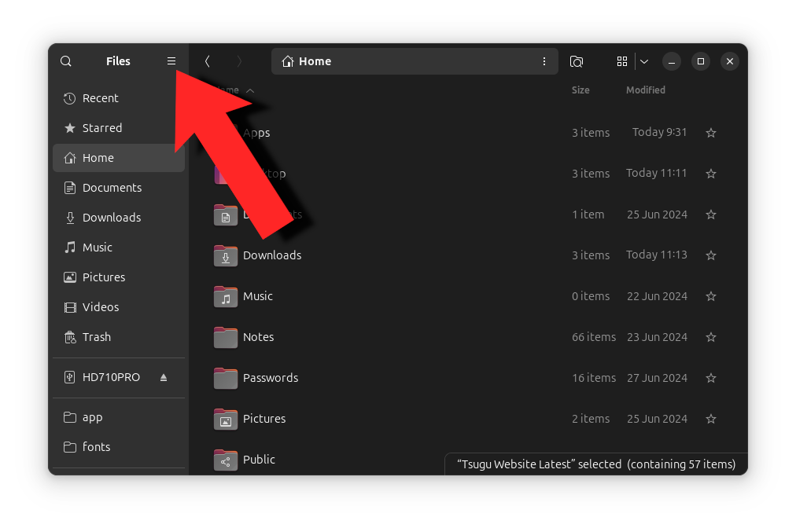
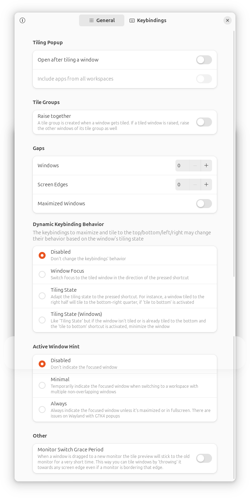

My spin on what to do after installing Ubuntu

In this guide I will show you actual tips for making your experience better, not just installing random extensions to make your system look prettier. I'm the type of person that rarely changes his wallpaper even.
Table of contents
- Enable right click > new document
- Enable right click > delete permanently/create a link
- Clicking an active app will minimize/maximize it, or show you previews of its active windows
- Make middle clicking close an active app
- Install a clipboard history extension
- Install GDebi, Gnome Extensions and Dconf
- Install flatpak
- Tweak the tiling extension in Ubuntu 24.04
- Add your own shortcuts
- Disable logging
- Fix AppImages
Enable right click > new document
When you create a new text file in this folder, it will appear in your right click menu.

Enable right click > delete permanently/create a link
Clicking an active app will minimize/maximize it, or show you previews of its active windows.
Press Ctrl + Alt + T and type gsettings set org.gnome.shell.extensions.dash-to-dock click-action 'minimize-or-previews' into the terminal.
Make middle clicking close an active app.
Press Ctrl + Alt + T again and type gsettings set org.gnome.shell.extensions.dash-to-dock middle-click-action 'quit' into the terminal.
Install a clipboard history extension
Open Firefox and navigate to https://extensions.gnome.org/extension/4839/clipboard-history/
Just follow the instructions on the site and install it.
I recommend changing the width of the clipboard extension, and to set a shortcut for launching it.
You can access the settings of the extension right here
Install GDebi, Gnome Extensions and Dconf
GDebi will make it so you can just double click on a .deb and install it, Gnome Extensions helps you manage your extensions, and Dconf can be used if you want to dig deeper into your extensions' settings.
sudo apt install gdebi gnome-extensions-app dconf-editor
Install flatpak
Snaps are fine, but let's be honest, most developers focus on flatpak and actually update the apps published on flathub. So let's add it into our system.
sudo apt install flatpak
flatpak remote-add --if-not-exists flathub https://flathub.org/repo/flathub.flatpakrepo
Now you can install any app from flathub, by typing flatpak install appname
Tweak the tiling extension in Ubuntu 24.04
If you are encountering issues with tiling on your Noble Numbat, just disable everything within the extension's settings. You can get there by opening Extensions, and finding Ubuntu Tiling Assistant It can still do corner tiling afterwards, which is the only feature that matters in my opinion.
{kind=link}
Add your own shortcuts
This is just my preference, obviously. But I found that these shortcuts make working with my system the easiest.

Disable logging
I can't believe I have to add this one, but I was just playing Cities Skylines and my syslog filled up my entire hard drive. So anyways, here's how to clear and permanently disable logging.
sudo systemctl stop rsyslogsudo systemctl disable rsyslogcd /var/log/sudo sh -c 'echo > /var/log/syslog'(Or you can just rm -rf it)
Fix AppImages
Certain AppImages still depend on the old Libfuse2 library, and so they won't launch on the latest Ubuntu. Install Libfuse by typing sudo apt install libfuse2